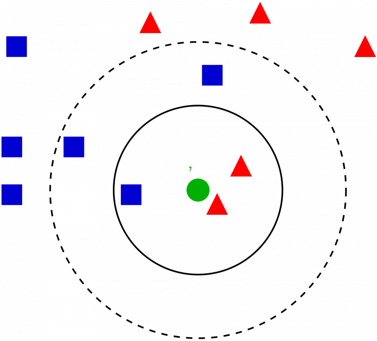
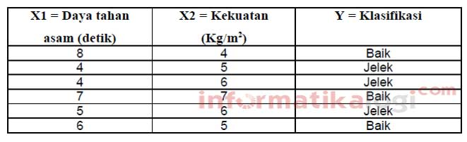
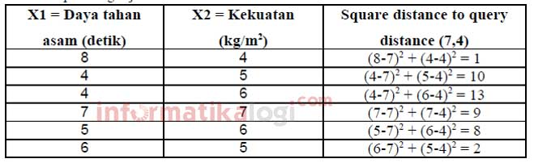
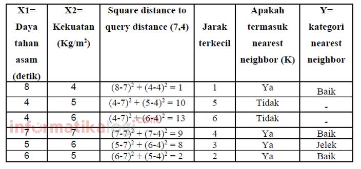
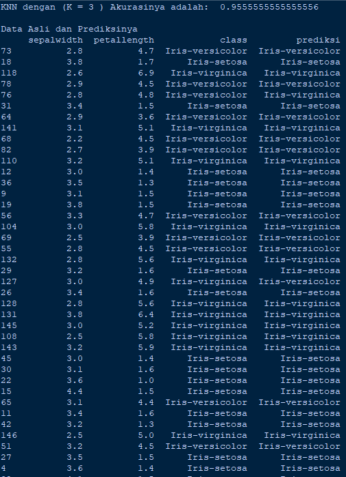

K-NEAREST NEIGHBOR
Pendahuluan

Algoritme k-nearest neighbor (k-NN atau KNN) adalah sebuah metode untuk melakukan klasifikasi terhadap objek berdasarkan data pembelajaran yang jaraknya paling dekat dengan objek tersebut.
Data pembelajaran diproyeksikan ke ruang berdimensi banyak, dimana masing-masing dimensi merepresentasikan fitur dari data. Ruang ini dibagi menjadi bagian-bagian berdasarkan klasifikasi data pembelajaran. Sebuah titik pada ruang ini ditandai kelas c jika kelas c merupakan klasifikasi yang paling banyak ditemui pada k buah tetangga terdekat titk tersebut. Dekat atau jauhnya tetangga biasanya dihitung berdasarkan jarak Euclidean.
Pada fase pembelajaran, algoritme ini hanya melakukan penyimpanan vektor-vektor fitur dan klasifikasi dari data pembelajaran. Pada fase klasifikasi, fitur-fitur yang sama dihitung untuk data test (yang klasifikasinya tidak diketahui). Jarak dari vektor yang baru ini terhadap seluruh vektor data pembelajaran dihitung, dan sejumlah k buah yang paling dekat diambil. Titik yang baru klasifikasinya diprediksikan termasuk pada klasifikasi terbanyak dari titik-titik tersebut.
Nilai k yang terbaik untuk algoritme ini tergantung pada data; secara umumnya, nilai k yang tinggi akan mengurangi efek noise pada klasifikasi, tetapi membuat batasan antara setiap klasifikasi menjadi lebih kabur. Nilai k yang bagus dapat dipilih dengan optimasi parameter, misalnya dengan menggunakan cross-validation. Kasus khusus di mana klasifikasi diprediksikan berdasarkan data pembelajaran yang paling dekat (dengan kata lain, k = 1) disebut algoritme nearest neighbor.
Ketepatan algoritme k-NN ini sangat dipengaruhi oleh ada atau tidaknya fitur-fitur yang tidak relevan, atau jika bobot fitur tersebut tidak setara dengan relevansinya terhadap klasifikasi. Riset terhadap algoritme ini sebagian besar membahas bagaimana memilih dan memberi bobot terhadap fitur, agar performa klasifikasi menjadi lebih baik.
Kelebihan Algoritma K-NN
- Sangat nonlinear
- Mudah dipahami dan diimplementasikan
Kekurangan Algoritma K-NN
- Perlu menunjukkan parameter K (jumlah tetangga terdekat)
- Tidak menangani nilai hilang (missing value) secara implisit
- Sensitif terhadap data pencilan (outlier)
- Rentan terhadap variabel yang non-informatif
- Rentan terhadap dimensionalitas yang tinggi
- Rentan terhadap perbedaan rentang variabel
- Nilai komputasi yang tinggi.
Algoritma K-NN
Langkah-langkah algortima K-Means Clustering :
-
Menentukan parameter k (jumlah tetangga paling dekat).
-
Menghitung kuadrat jarak eucliden objek terhadap data training yang diberikan.

-
Mengurutkan hasil no 2 secara ascending (berurutan dari nilai tinggi ke rendah)
-
Mengumpulkan kategori Y (Klasifikasi nearest neighbor berdasarkan nilai k)
-
Dengan menggunakan kategori nearest neighbor yang paling mayoritas maka dapat dipredisikan kategori objek.
Contoh Perhitungan K-NN
Terdapat beberapa data yang berasal dari survey questioner tentang klasifikasi kualitas kertas tissue apakah baik atau jelek, dengan objek training dibawah ini menggunakan dua attribute yaitu daya tahan terhadap asam dan kekuatan.

Akan diproduksi kembali kertas tissue dengan attribute X1=7 dan X2=4, tanpa harus mengeluarkan biaya untuk melakukan survey, maka dapat diklasifikasikan kertas tissue tersebut termasuk yang baik atau jelek


Dengan mengurutkan jarak terkecil, semisal diambil K=3, maka perbandingan nya adalah 2 (Baik) >1 (Jelek). Maka dapat disimpulkan kertas tissue dengan attribute X1=7 dan X2=4 masuk ke kelas Baik.
Implementasi
hal yang diperlukan dalam pengimplementasian
- python 3.6
library yang harus di install
- Pandas library
pip install pandas
- sklearn library
pip install sklearn
Step 1,import Library
import Library setelah menginstall library yang diperlukan kita dapat mengimport library kedalam koding
# Import library
import pandas as pd
from sklearn.neighbors import KNeighborsClassifier
from sklearn.model_selection import train_test_split
Step 2,import Data
# import data
data_orj = pd.read_csv("iris.csv")
Step 3,Memanggil semua data
# Mengambil semua data untuk percobaan
data = data_orj.loc [:,'sepallength':'class']
Step 4,Memeanggil 2 kolom fitur dan 1 kolom class
# Mengambil 3 kolom
data_knn = data[['sepalwidth','petallength','class']]
Step 5,Menentukan inputan K
# Menentukan jumlah K atau jumlah tetangga terdekat
inK =3
Step 6,Mencari knn dan split data x dan y
# Mencari knn dengan menggunakan sklearn neighbors clssifier
knn = KNeighborsClassifier(n_neighbors = inK)
x,y = data_knn.loc[:,data_knn.columns != 'class'], data_knn.loc[:,'class']
x_train,x_test,y_train,y_test = train_test_split(x,y,test_size = 0.3, random_state = 42)
knn.fit(x_train,y_train)
prediction = knn.predict(x_test)
print('KNN dengan (K =',inK,') Akurasinya adalah: ', knn.score(x_test,y_test))
print("")
Step 7,Menampilkan akurasi dan prediksi data
datatest = pd.DataFrame(x_test)
datatest["class"] = y_test
datatest["prediksi"] = prediction
print ("Data Asli dan Prediksinya")
print (datatest)
Step 8,Hasil Output

Note : Dataset dan Program bisa didownload dan dilihat dalam DISINI
Referensi
-
https://id.wikipedia.org/wiki/KNN
-
https://informatikalogi.com/algoritma-k-nn-k-nearest-neighbor/
-
https://www.advernesia.com/blog/data-science/pengertian-dan-cara-kerja-algoritma-k-nearest-neighbours-knn/
-
http://congryo.blogspot.com/2013/01/pengertian-kekurangan-dan-kelebihan.html
-
https://medium.com/@16611130/klasifikasi-menggunakan-metode-knn-k-nearest-neighbor-dalam-python-a40e79a74101